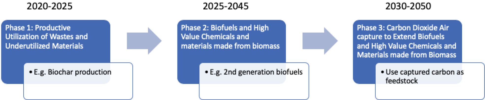
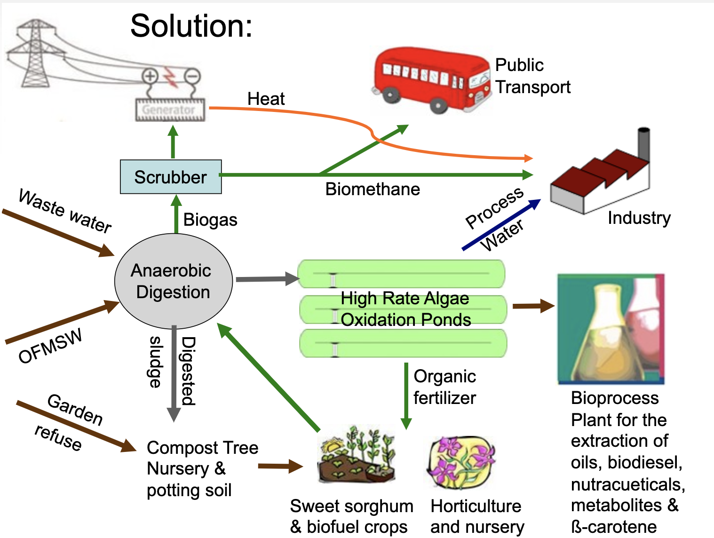
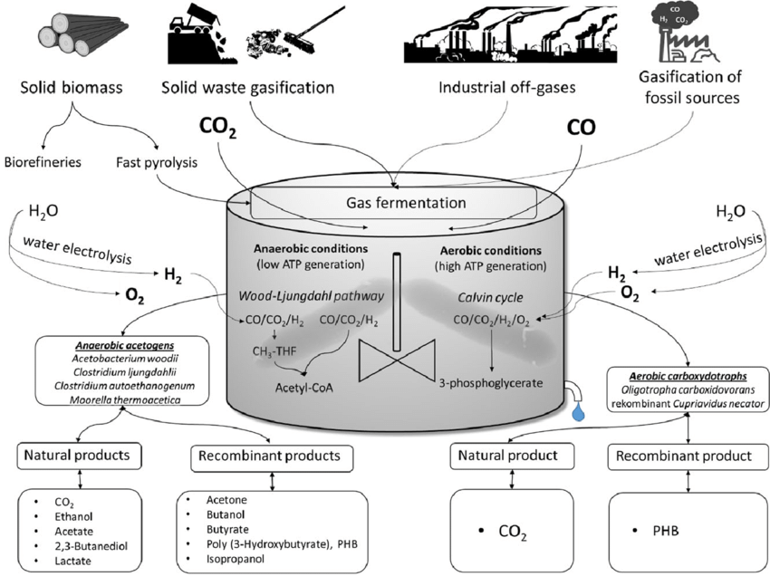
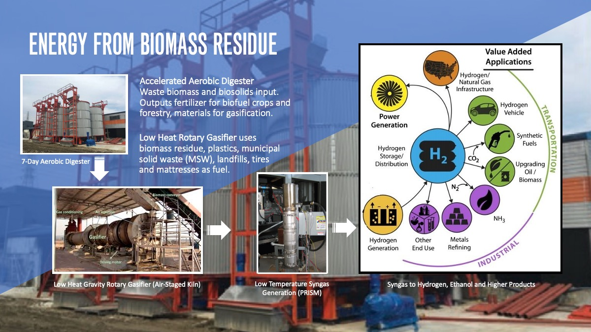

The New Bioeconomy
Economically and Environmentally Sustainable Production of Fuels and Chemicals from Biomass


Georgia Institute of Technology
Atlanta, Georgia
Production of fuels and chemicals from biomass can potentially support rural economies and support economic development with low environmental impact.
The USDA is sponsoring a research project involving researchers at Northwestern University, University of South Florida, the Georgia Institute of Technology, and LanzaTech, on technology for production of fuels and chemicals from biomass using reversal of the β-oxidation cycle This specific technology could produce, for example, components for plastics made from wood waste rather than from natural gas or petroleum.
We are interested in conversations with stakeholders, to hear about the issues that matter to community members, to environmental advocates, and to people working all along the supply chain of fuel and chemical production in the southeast.
We are endeavoring to establish an ongoing network and will allow the voices of stakeholders to be reflected in the research. Southeast Coastal Partners is amoung the regional groups we've partnered with on the US EPA's sustainable material managment project.
Southeast Coastal Partners
"We are honored to have the agencies and their talented team working with us to improve Southeast Georgia lifestyles by attracting new industry. The programs allow us to focus on workforce development which is one of the critical pieces in our tool belt." - Sidney Wildes
Coastal Bioeconomy and Energy
State and National Partners
Georgia Institute of Technology
Georgia Center of Innovation for Energy Technology
Georgia Department of Economic Development
US Environmental Protection Agency
US Department of Agriculture - National Institute of Food and Agriculture
US Department of Energy Biomass R&D Initiative
Stages of the Bioeconomy
Bioeconomy Stage 1 (2020-2025):
Productive Utilization of Waste and Underutilized Materials
NAICS of Industries participating in local bioeconomiesThe following NAICS filters are applied in our bioeconomy planner
Biomass Waste Contributors
113000 - Timber and raw forest products
325190 - Other basic organic chemicals
321113 - Sawmills - Includes Wood Pellet Industry
113310 - Logging
32121 - Veneer, Plywood, Engineered Wood Product Manufacturing
32191 - Millwork
562213 - Solid Waste Combustors and Incinerators
322121 - Paper (except Newsprint) Mills
322110 - Pulp Mills
Products Produced from Biomass Waste
3256 - Rubber Product Manufacturing
325211 - Plastics Material and Resin Manufacturing (includes PLA from plants)
325991 - Custom Compounding of Purchased Resins
335991 - Carbon and Graphite Product Manufacturing
325120 - Industrial Gas Manufacturing - Includes Carbon Dioxide
326190 - Other plastic products
Green Energy Sectors
221117 - Biomass Electric Power Generation
221111 - Hydroelectric Power Generation
221113 - Nuclear Electric Power Generation
221114 - Solar Electric Power Generation
221115 - Wind Electric Power Generation
221116 - Geothermal Electric Power Generation
221118 - Other Electric Power Generation (includes tidal)
Recycling
423930 - Recyclable Material Merchant Wholesalers
562920 - Materials Recovery Facilities
811212 - Recycling inkjet cartridges (part of Computer and Office Machine Repair)
562111 - Solid Waste Collection
562119 - Other Waste Collection
NAPCS Product Codes
61101010104 - Fuel ethanol (fuel-grade alcohol) and other biofuels
61101010105 - Other fuels
67110010102 - Industrial gases (oxygen, carbon dioxide, nitrogen, argon, hydrogen, fluorocarbon, acetylene, and other industrial gases)
For comparison - Fossil fuel alternatives to using biotech
221112 - Fossil Fuel Electric Power Generation
324110 - Gasoline, fuels, and by-products of petroleum refining
3D Printing of Bioplastics from Polylactic Acid (PLA) - About PLA Bioplastics
Controlled Environment Agriculture (CEA)
Using Campus Wastewater to Grow Vegetables - Georgia Tech
"The proposed anaerobic membrane biological treatment process will transfer organic contaminants into biogas and remove pathogens such as E. coli to ensure food safety, but the nutrients (nitrogen, phosphorus and potassium, for example) will remain. By using a smart membrane or nanomaterials to extract trace contaminants like endocrine disruptors, heavy metals and pharmaceuticals, the nutrients that are left can be pumped through a vertical hydroponic system to grow produce without adding fertilizer. The project will monitor water and produce quality and measure contamination from chemicals and microbes continuously."
Kubo Greenhouses - Semi closed, low energy greenhouses using waste heat and CO2.
Processes for generating chemicals and fuels from waste...
Anaerobic Digestion with Gas Scrubber
Organic Fraction of Municipal Solid Waste (OFMSW)
Anaerobic and Aerobic Syngas Fermentation
Using gas mixtures of CO, CO2and H2as microbial substrates: The do’s and don’ts of successfultechnology transfer from laboratory to production scale - Syngas sources, anaerobic and aerobic syngas fermentation, model organisms involved, and natural and recombinant products.
Accelerated Aerobic Digester with Rotary Gasifier and Nonthermal Plasma Syngas Generation
{kind=link}
Low Temperature Syngas Generation from Biomass using Nonthermal Plasma with CPOX
PRISMTM uses low temperature plasma to produce clean hydrogen-rich, process-ready syngas from any carbonaceous feedstock affordably at room temperature. Using 60 to 100 watts to operate, the process eliminates intensive energy requirements while maintaining high conversion efficiency using Catalytic Partial Oxidation (CPOX). Less than 1% parasitic load. Greater than 98% CO/H2. PRISM is exothermic so room temp natural gas is introduced and a near pure synthesis gas exits at around 800°c. - Nat Mundy, Freedom Energy Tech CEO.
Synthesis Gas Created Using a Catalyst for the Thermal Decomposition of Hydrocarbon
Conversion of biomass to syngas is typically low-yield. The University of Minnesota developed a metal catalyst that reduces the biomass reaction time by up to a factor of 100. The catalyst can be operated at atmospheric pressure and reduces char. The entire process is autothermic and therefore heating is not required. Another process has been developed at DTU Energy which is efficient and does not have any issues of fouling of the catalyst (in this case a cerium oxide catalyst). - Source: wiki
Bioeconomy Stage 2 (2025-2045):
Biofuels and High Value Chemicals and Materials from Biomass
Cellular and Cell-free Bioproduction Systems
Bioenergy Technologies Office (BETO) Biofuels Techno-Economic Analysis (TEA) SummaryA Critical Comparison of Cellular and Cell-free Bioproduction Systems - Bastian Vögeli
DOE Bioenergy Technologies Office (BETO) 2019 Project Peer Review - Patrick Lamers
Bioeconomy Stage 3 (2030-2050):
Captured Biogenic CO2 as Feedstock
Capturing CO2 from biological sources and using it to produce algae, plastics, transport fuels, animal feed and other chemicals/materials will help reduce emissions in the second half of the 21st century. - Going Carbon NegativeReusing captured biogenic CO2 as a feedstock is an alternative to pumping it underground into rock formations. Bioenergy with Carbon Capture and Storage (BECCS) has been tested at industrial scale in the U.S. to store carbon in sandstone at the Archer Daniels Midland (ADM) bioethanol plant.
Whether using as a feedstock or pumping into rock formations, the process of capturing carbon from flue gas with CO2 levels of 10%, is more bountiful than Direct Air Capture (DAC) since atmospheric CO2 levels are only 0.04%.
Hydrogen from Wastewater, Seawater, Air and Biorefinery Waste